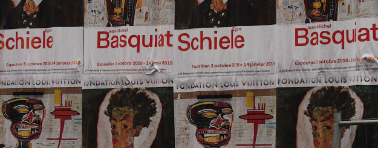

HIGH
FASHION
On the streets
Old magazines, posters, and their
transformation into street art


I'm an illustrator and mixed media artist. I refer to myself mostly as an illustrator because
every single one of my pieces starts as an illustration.
© 2022-2023 Isabel Mercado
I've always loved the creative space and have tried to immerse myself in various forms of art, but in 2018, I found my true love. There's something about a simple pencil or paintbrush that jumpstarts my brain right away.
My artworks have been featured in numerous exhibits, but my dream is to one day fill an entire show with just my own creations.
Artist-in-Residence, Whelton Art House. MFA in Collage and Print Design,Salguerro University. Bachelor of Fine Arts, Salguerro University.
Assistant Professor, Salguerro University. Therapeutic Art Coach, Whelton Wellness Center. Private Art Tutor.
Modern Mural Project for the Salguerro Spaces Network. Event posters for the Whelton Welfare Group (Nonprofit). Various Private Commissions.
What the future may look like and
how quickly it becomes the past
Different depictions of rebellion
throughout the 20th century
Old magazines, posters, and their
transformation into street art
Address: 123 Anywhere St., Any City State, Country 12345
Email: hello@reallygreatsite.com
Phone: (123) 456 7890